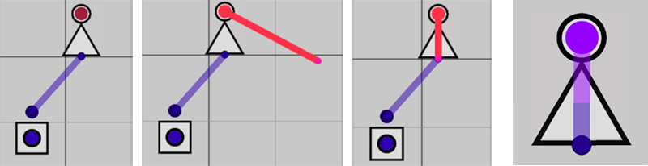

致谢
- 本项目的浏览器api，canvas绘图api部分代码均由deepseek提供
- 数字电路相关知识来源于https://www.bilibili.com/video/BV1o2KgzpE5K（已三连）
- 此网页的功能与外观设计参考了https://github.com/hneemann/Digital
- 感谢Dif-scope同学提供的美术指导
使用说明
- 右侧是元件池和几个预设，左侧是控制部分,中央是电路绘制区域。
- 长按鼠标左键可以移动屏幕，拖动元件，可从元件池中拖出你想使用的元件，也可把多余的元件拖入元件池删除它，
长按鼠标右键可以批量选择，批量移动，右键单击选中部分可以复制。
- 元件有若干输入输出的接线端口，小的是输入，大的是输出，从端口处开始拖动即可连线，右键单击可以删除导线。
- 紫色表示1，蓝色表示0，红色表示undefined，该元件并未获得足够的输入。
-
两种运行模式
时序模式：按下运行后每帧运行一次，暂停则停止运行，适用于模拟时序电路。
组合模式：按下模拟后刷新一次，也可以开启更新时运行选项，每当电路发生变化的时候自动运行一次，适用于搭建大型组合电路。
-
关于排线，此网页只可以从端口处开始接线，一个输入端口只能引出一条导线（只能与一个输出端口相连），
而一个输出端口可引出多条导线与多个输入相连，仅有不同类型的端口可以相连，你不能把两个输出相连（此网页并不能模拟短路）。
你可以使用节点元件让一条导线在中途引出若干条分支，或者更改美化导线布局。
-
关于时序电路，此网页可以搭建模拟真实的时序电路，但是需要一点点手法，你必须确保在上一帧这个元件处于你想要的状态，具体步骤如下。

首先确保你处于时序模式，有些时序电路可能需要一帧以上完成相应功能。
如果你把一个非门输入输出端直接相连，它会直接变成红色（未激活）。
但是，你可以提前给非门提供一个输入，给它的每个端口设置一个初始值，这时再从非门的输出引出一根导线，连到非门的输入上，
趁按钮不注意，抢过非门的输入端口，从而在非门内部正在运行的情况下把它的输入输出相连，不出意外，你将会看到非门正在高频闪烁。
通过同样的方法，可以构建稳定的锁存器，从而搭建时序电路。
但是，请注意，这种环形连接本身是非法的，除了锁存器等时序逻辑元件，请在电路搭建中尽量避免它。
- 关于各个元件的用法，可参考这个b站视频